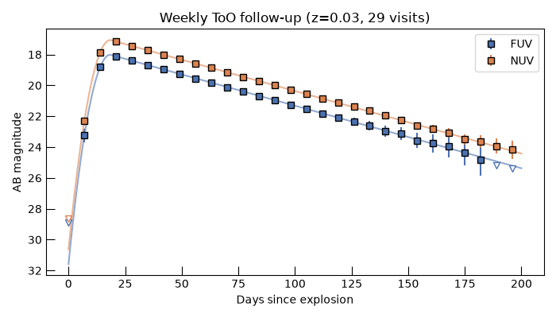

Note
Go to the end to download the full example code.
Target-of-Opportunity Follow-up of a TDE#
TDE End-to-End Simulation starts from a whole
population, Monte Carlo sampled and screened against a real
SurveySchedule. A target-of-opportunity (ToO)
follow-up is the opposite problem: one specific TDE, at a position and redshift
already known (from an alert, say), that gets pointed at directly on whatever cadence
is chosen – no schedule, no windowed sampling, no
Event.
simulate_photometry() is built
for exactly this: given a sky position and whatever time grid and exposure time the
caller wants evaluated, it runs the same noise model a real survey simulation uses
(a batched SourceSpectrum plus
get_snr()), with no schedule in the loop. This example
follows one TDE weekly across its whole ~200-day duration and builds its UV light
curves.
Choosing the target#
A target of opportunity is a specific object, not a population draw.
TidalDisruptionEvent still supplies the
right SED model (VanVelzenTDESED)
and a conservative duration window; only its parameters are fixed here, to one
concrete realization (via a seed, for reproducibility), rather than left to be
sampled for a whole population. Milky Way foreground dust is resolved the same way
a real survey simulation resolves it – resolve_ebv()
against the real sky map – since it depends only on sky position, not on when the
TDE happens to be observed.
import numpy as np
from astropy import units as u
from astropy.coordinates import SkyCoord
from astropy.time import Time
from m4opt.missions import uvex
from m4opt.synphot.background import GalacticBackground
from uvex_transients.dust import dust_map, log_attenuation, resolve_ebv
from uvex_transients.transients.TDEs import TidalDisruptionEvent
from uvex_transients.utils.plotting import get_band_color, plot_band_light_curve, resolve_fig_axes, set_plot_style
set_plot_style()
tde = TidalDisruptionEvent()
coord = SkyCoord(ra=195.3 * u.deg, dec=27.8 * u.deg)
redshift = 0.03
luminosity_distance = tde.cosmology.luminosity_distance(redshift)
ebv = float(resolve_ebv(dust_map(), coord))
params = {name: value[0] for name, value in tde.sed.sample_parameters(1, rng=12345).items()}
print(f"E(B-V) at target: {ebv:.3f}")
print("SED parameters:", {name: f"{value:.3g}" for name, value in params.items()})
E(B-V) at target: 0.007
SED parameters: {'amplitude': '2.36e+43 erg / s', 'sigma_rise': '3.58 d', 'tau_decline': '26 d', 'temperature': '1.44e+04 K'}
A weekly cadence#
No schedule to query – just pick the times to observe. tde.duration_limit is a conservative
upper bound on how long this class of event stays relevant; weekly visits across
that whole window is a plausible real follow-up cadence for something this slow.
29 visits, one every 7.0 d.
Simulating photometry, with no zodiacal light#
A real ToO trigger time isn’t known in advance, so there’s no meaningful
obstime to feed a season-dependent background term like zodiacal light. Passing
background=GalacticBackground() explicitly simulates against dust (already
folded into the source flux itself, via ebv) plus the Milky Way’s
diffuse UV glow only, and leaves observer_location/obstime at their
placeholder defaults – both irrelevant to
GalacticBackground, so there is nothing else to
supply. See simulate_photometry()’s
own docstring for exactly when that placeholder default is (and isn’t) safe.
phot = tde.sed.simulate_photometry(
t,
EXPTIME,
uvex.detector,
coord,
background=GalacticBackground(),
redshift=redshift,
luminosity_distance=luminosity_distance,
ebv=ebv,
rng=0,
**params,
)
print(phot["t", "band", "snr", "ab_mag"][:6])
t band snr ab_mag
d
---- ---- -------------------- ------------------
0.0 FUV 0.011435447604935759 28.88966586939173
0.0 NUV 0.042660466209702985 28.658262785939527
7.0 FUV 12.75841223741749 23.251605560381677
7.0 NUV 28.266290110411916 22.325140164532897
14.0 FUV 114.19899302776052 18.797226845120594
14.0 NUV 228.6763329164951 17.849637520582068
The light curves#
The noiseless theory curve (mag(),
evaluated at each band’s pivot wavelength) alongside the simulated weekly visits:
detections above SNR=5 as points with error bars, fainter visits as
downward-pointing upper limits – the same plotting convention used at the end of
TDE End-to-End Simulation.
SNR_THRESHOLD = 5.0
t_theory = np.linspace(0, tde.duration_limit.to_value(u.day), 300) * u.day
fig, ax = resolve_fig_axes(fig_size=(7, 4))
for band in ("FUV", "NUV"):
nu = uvex.detector.bandpasses[band].pivot().to(u.Hz, equivalencies=u.spectral())
theory_mag = tde.sed.mag(
nu,
t_theory,
redshift=redshift,
luminosity_distance=luminosity_distance,
log_attenuation=log_attenuation(nu, ebv),
**params,
)
plot_band_light_curve(
ax,
band,
phot["t"],
phot,
t_theory=t_theory,
theory_mag=theory_mag,
snr_threshold=SNR_THRESHOLD,
color=get_band_color(band),
err_scale=5.0,
label=band,
)
ax.invert_yaxis()
ax.set_xlabel("Days since explosion")
ax.set_ylabel("AB magnitude")
ax.set_title(f"Weekly ToO follow-up (z={redshift}, {len(t)} visits)")
ax.legend()
fig.tight_layout()

Bonus: what zodiacal light would have cost#
Suppose the trigger date had been known – say, this TDE actually went off on a
specific night. Comparing that against the Galactic-only run above shows what
assuming background=GalacticBackground() glossed over: passing
background=None (the default) uses uvex’s own detector
background, Galactic and zodiacal light together, and now real
observer_location/obstime values (from
observer_location()) are needed too, since zodiacal
light actually depends on both.
hypothetical_trigger = Time("2031-03-01T00:00:00", scale="utc")
obstime = hypothetical_trigger + t
observer_location = uvex.observer_location(obstime)
phot_with_zodi = tde.sed.simulate_photometry(
t,
EXPTIME,
uvex.detector,
coord,
observer_location=observer_location,
obstime=obstime,
redshift=redshift,
luminosity_distance=luminosity_distance,
ebv=ebv,
rng=0,
**params,
)
for band in uvex.detector.bandpasses:
galactic_only = np.nanmedian(phot["snr"][phot["band"] == band])
with_zodi = np.nanmedian(phot_with_zodi["snr"][phot_with_zodi["band"] == band])
print(f"{band}: median SNR {galactic_only:.1f} (Galactic only) vs {with_zodi:.1f} (+ zodiacal)")
FUV: median SNR 27.5 (Galactic only) vs 27.5 (+ zodiacal)
NUV: median SNR 56.7 (Galactic only) vs 56.2 (+ zodiacal)
Total running time of the script: (2 minutes 16.971 seconds)